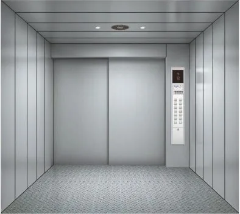
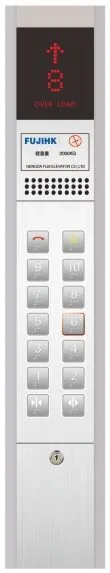
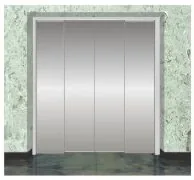
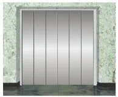
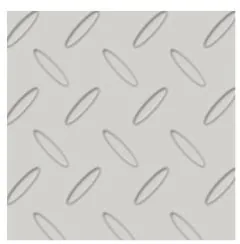
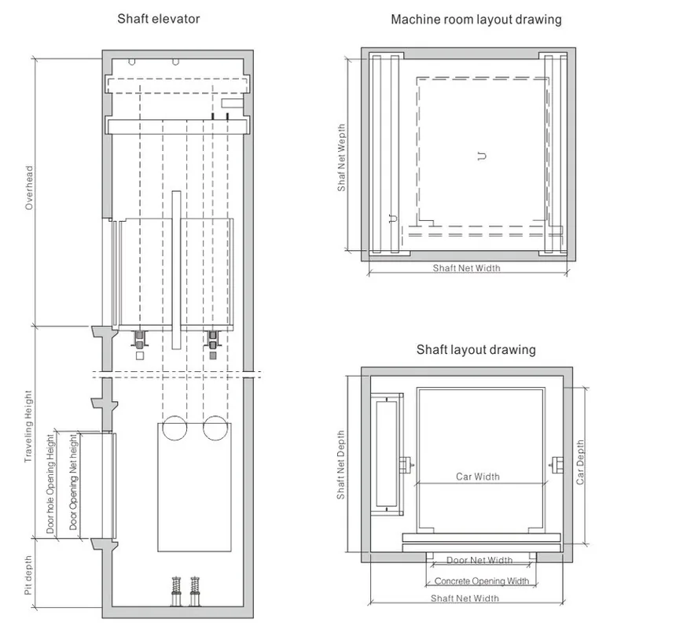
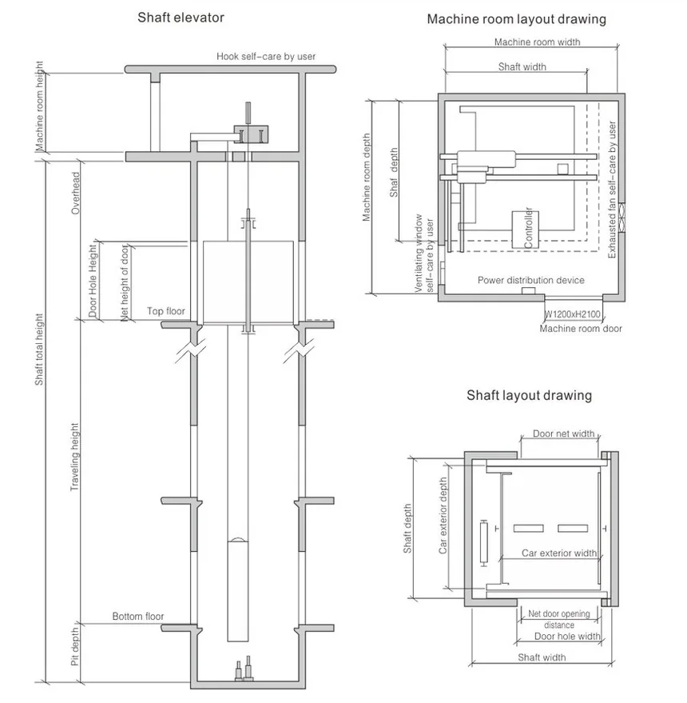
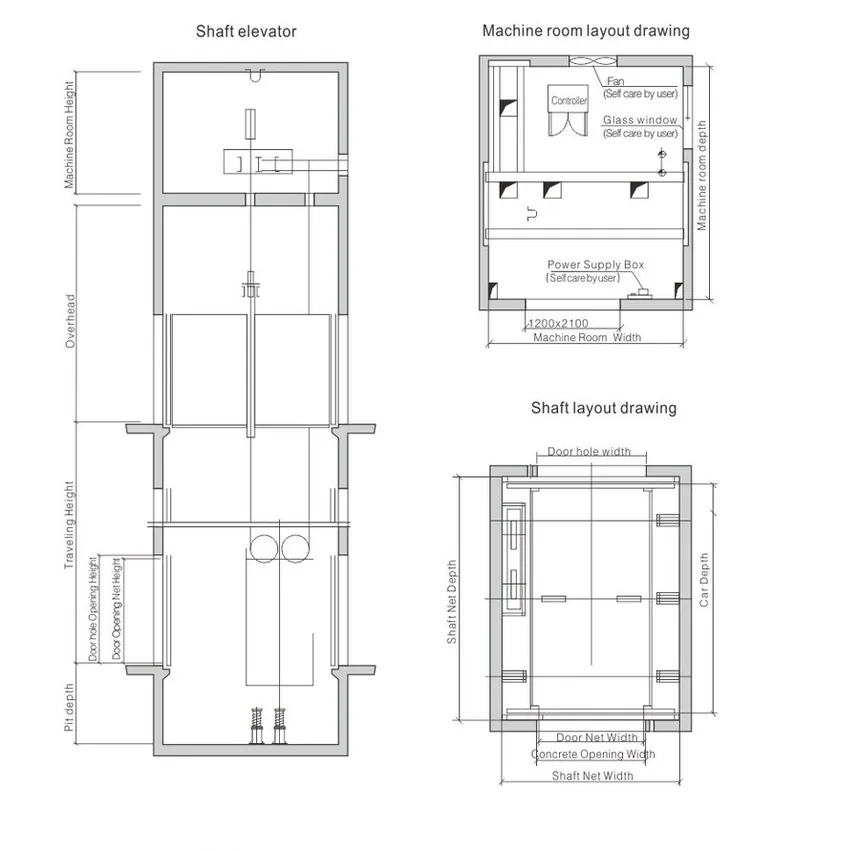
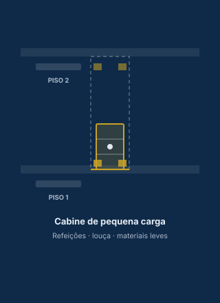

A versão MRL exige menor altura de caixa, o que reduz os requisitos de projecto de fábricas e outros edifícios industriais.
A máquina de tracção é leve e compacta: optimiza o espaço arquitectónico, melhora a eficiência energética e reduz o consumo e a taxa de avarias. Solução para fábricas, armazéns, lojas de departamentos e bibliotecas.





As imagens são geradas por computador e podem diferir ligeiramente dos produtos reais.
| Carga (kg) | Velocidade (m/s) | Cabine exterior C×P×A (mm) | Porta L×A (mm) | Caixa L×P (mm) | Cabeceira (mm) | Fosso (mm) | Porta |
|---|---|---|---|---|---|---|---|
| 1 000 | 0,5 | 1500×1800×2200 | 1200×2100 | 2250×2200 | 4 500 | 1 500 | Duas folhas, abertura lateral |
| 1,0 | 4 500 | 1 500 | |||||
| 1,5 | 4 600 | 1 600 | |||||
| 2,0 | 4 800 | 1 800 | |||||
| 2 000 | 0,5 | 2000×2300×2200 | 1500×2100 | 3150×2660 | 4 800 | 1 500 | Duas folhas, abertura lateral |
| 1,0 | 5 000 | 1 500 | |||||
| 1,5 | 5 200 | 1 600 | |||||
| 2,0 | 5 200 | 1 800 | |||||
| 3 000 | 0,5 | 2470×2560×2200 | 1800×2100 | 3700×3000 | 5 000 | 1 600 | Quatro folhas, abertura central |
| 5 000 | 0,5 | 2800×3400×2500 | 2400×2400 | 4250×3800 | 6 100 | 1 600 | Quatro folhas, abertura central |


| Carga (kg) | Velocidade (m/s) | Cabine exterior C×P×A (mm) | Porta L×A (mm) | Caixa L×P (mm) | Cabeceira (mm) | Fosso (mm) | Sala de máquinas L×P / altura (mm) | Porta |
|---|---|---|---|---|---|---|---|---|
| 630 | 0,5 | 1200×1500×2200 | 1100×2100 | 2100×1860 | 4 200 | 1 500 | 2500×3000 / 2 200 | Duas folhas, lateral |
| 1 000 | 0,5 | 1500×1800×2200 | 1200×2100 | 2250×2160 | 4 200 | 1 500 | 3000×3000 / 2 200 | Duas folhas, lateral |
| 2 000 | 0,5 | 1570×2900×2200 | 1500×2100 | 2700×3260 | 4 200 | 1 500 | 3500×3000 / 2 500 | Duas folhas, lateral |
| 2 000 | 1,0 | 1570×2900×2200 | 1500×2100 | 2700×3260 | 4 500 | 1 500 | 3500×3000 / 2 500 | Duas folhas, lateral |
| 2 000 | 1,5 | 2000×2300×2200 | 1500×2100 | 2850×2660 | 4 500 | 1 600 | 3500×3000 / 2 500 | Quatro folhas, central |
| 2 000 | 2,0 | 2000×2300×2200 | 1500×2100 | 2850×2660 | 4 800 | 1 800 | 3500×3000 / 2 500 | Quatro folhas, central |
| 3 000 | 0,25 / 0,5 | 2070×3050×2200 | 1800×2100 | 3300×3410 | 4 500 | 1 500 | 3800×4200 / 2 500 | Quatro folhas, central |
| 3 200 | 1,0 | 2070×3100×2200 | 1800×2100 | 3300×3460 | 4 500 | 1 500 | 3800×4200 / 2 500 | Quatro folhas, central |
| 5 000 | 0,25 / 0,5 | 2800×3400×2500 | 2000×2200 | 4200×3800 | 5 000 | 1 600 | 4200×3800 / 2 800 | Quatro folhas, central |
| 7 000 | 0,25 / 0,5 | 3000×4200×2500 | 2600×2400 | 4500×4600 | 5 000 | 1 600 | 4500×4600 / 2 800 | Quatro folhas, central |
| 10 000 | 0,25 | 3070×5760×2500 | 2600×2400 | 4900×6200 | 5 000 | 1 600 | 4900×6200 / 2 800 | Quatro folhas, central |
Valores de referência; a produção final segue o contrato.
Transporte eficiente de viaturas em parques de estacionamento e outras áreas que o exijam.
Tecnologia VVVF com nivelamento preciso e viagem silenciosa, com poupança de energia superior a 30%. Existe com e sem casa de máquinas. O comando e a estrutura de alta resistência foram concebidos para cargas de tracção irregulares, com pouco ruído e vibração.
| Carga (kg) | Velocidade (m/s) | Porta L×A (mm) | Cabine exterior L×P (mm) | Caixa L×P (mm) | Fosso (mm) | Cabeceira (mm) | Sala de máquinas L×P×A (mm) |
|---|---|---|---|---|---|---|---|
| 3 000 | 0,25 / 0,5 | 2400×2200 | 2700×5800 | 4100×6160 | 1 600 | 4 800 | 4100×6160×2500 |
| 5 000 | 0,25 / 0,5 | 2600×2200 | 3500×7200 | 4750×7560 | 1 600 | 4 800 | 4750×7560×2500 |

Valores de referência; a produção final segue o contrato.
Elevador de pequena carga para levar refeições, louça e materiais leves entre pisos.

Capacidade, dimensões, número de paragens e acabamentos são definidos para cada projecto, a partir do levantamento da caixa.
PEDIR PROPOSTADiga-nos o peso, as dimensões da carga e o número de paragens. Começamos a análise a partir daí.